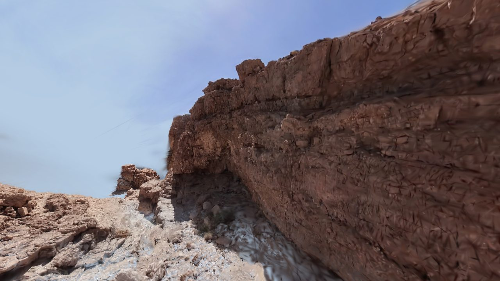
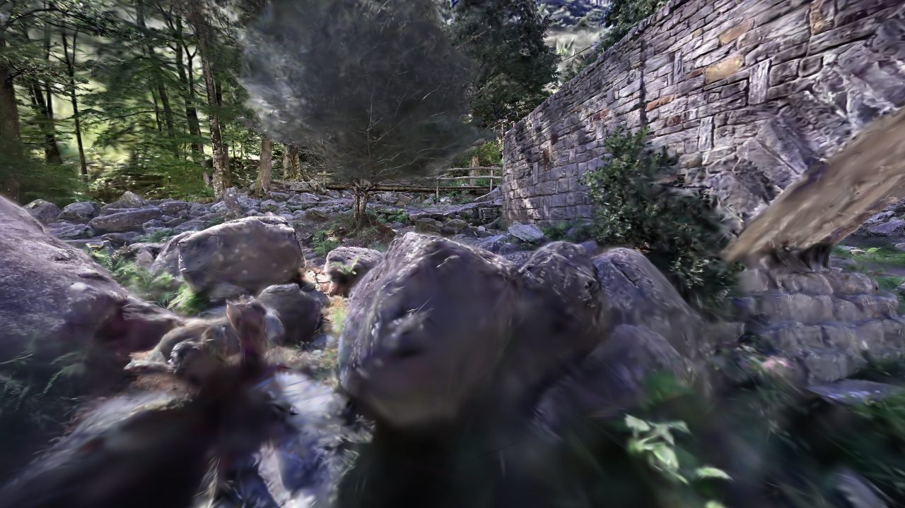
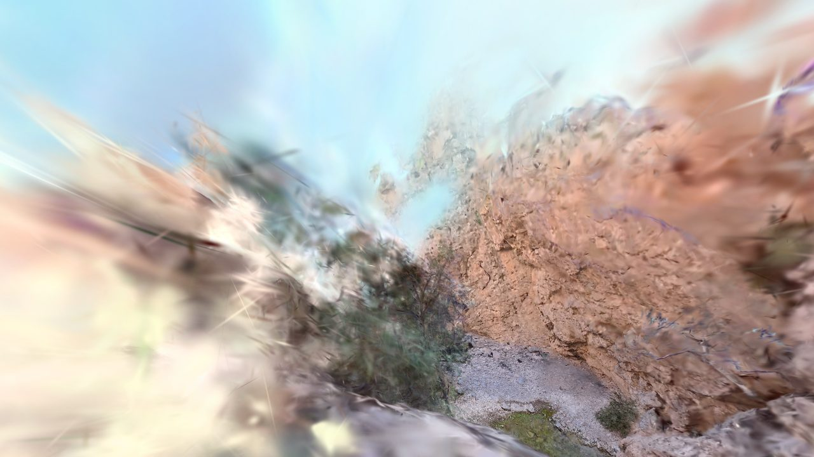
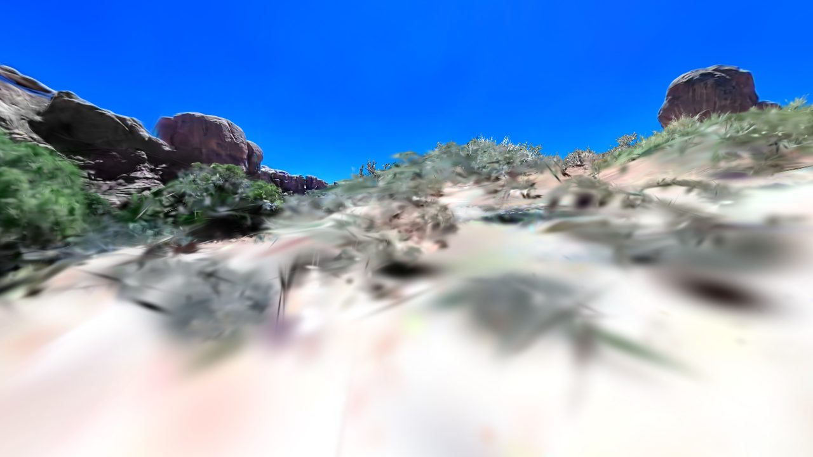
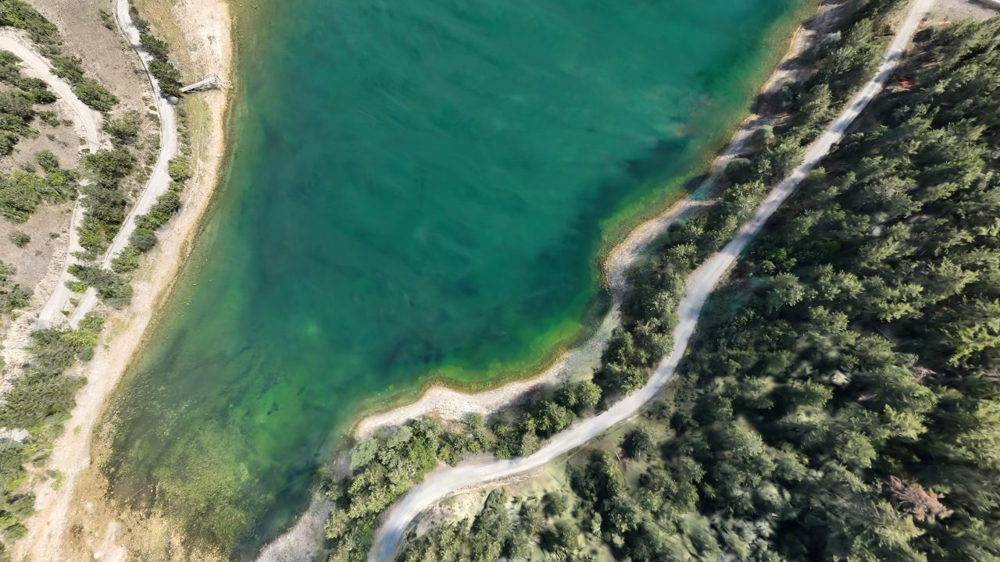
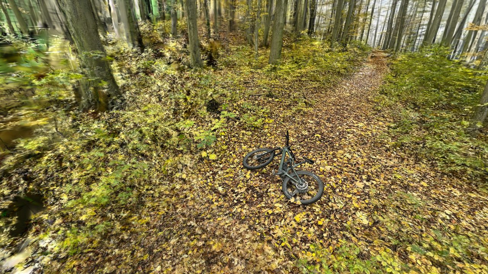

Every scanned environment in the arena: how it looks, where the drone may fly (only over ground the scan captured), and how far it got through the admission gates. Green: stage 2 or higher. Amber: passes the technical gates and waits for a person to approve the look. Red: something fails. Nothing appears in the film or article below stage 3; nothing carries a number below stage 4.
Owner's image
residential5 Utlida 1:80
Stage 2 · valid
The area is a 3D scan of a real rural property: two timber cottages, a garage, trees, fences and a garden, open to the sky. An altitude geofence a few metres above the ground acts like a roof, so the drone cannot climb over the houses or trees.
"Utlida 1:80" — 3D capture and Gaussian Splat by Jakob Safwan / Overblick Studio, https://www.overblickstudio.se . Source: https://superspl.at/scene/5f41cc74 . Licensed under CC BY 4.0.
Owner's image

Our render, drone's eye at launch
canyon5b Zohar Riverbad, Dead sea, Israel
Stage 2 · valid
The terrain is a 3D scan of a real desert canyon (a dry riverbed): rock walls, boulders and uneven ground, open to the sky. A flight ceiling (an altitude geofence) acts like a roof, so the drone cannot climb over the canyon walls.
"Zohar Riverbad, Dead sea, Israel" by barak9177 (https://superspl.at/scene/7aa4d3d4), licensed under CC BY 4.0.
Owner's image
hill-lodge Lodge on a hill
Stage 2 · valid
The area is a 3D scan of a real hillside property: a thatched lodge, terraced gardens, shrubs and trees on a slope, open to the sky. An altitude geofence a few metres above the ground acts like a roof, so the drone cannot climb over tall obstacles.
"Lodge on a hill" by zartan_3dfpv (https://superspl.at/scene/c393e279), licensed under CC BY 4.0.
Owner's image
sunny-meadow Sunny Meadow
Stage 2 · valid
The area is a 3D scan of a real meadow: open grass, a row of trees and the edge of a field, open to the sky. An altitude geofence a few metres above the ground acts like a roof, so the drone cannot climb over tall obstacles.
"Sunny Meadow" by alienhd (https://superspl.at/scene/3aacb9d5), licensed under CC BY 4.0.
Owner's image

Our render, drone's eye at launch
verzasca-valley Verzasca River - Ponte dei Salti, Switzerland
Stage 2 · valid
The area is a 3D scan of a real alpine river valley: a stone footbridge over a rocky river, stone paths, trees and steep banks, open to the sky. An altitude geofence a few metres above the ground acts like a roof, so the drone cannot climb over tall obstacles.
"Verzasca River - Ponte dei Salti, Switzerland" by tosolini (https://superspl.at/scene/fb6b9fae), licensed under CC BY 4.0.
Owner's image
forest-trail Forest Scan
Stage 2 · valid
The area is a 3D scan of a real forest trail: dense trees, undergrowth and a narrow path, open to the sky. An altitude geofence a few metres above the ground acts like a roof, so the drone cannot climb over tall obstacles.
The terrain is a 3D scan of a real desert canyon (a dry riverbed): rock walls, boulders and uneven ground, open to the sky. A flight ceiling (an altitude geofence) acts like a roof, so the drone cannot climb over the canyon walls.
"Zohar Riverbad, Dead sea, Israel" by barak9177 (https://superspl.at/scene/7aa4d3d4), licensed under CC BY 4.0.
Owner's image
residential Utlida 1:80
Stage 1 · integrated · not passing: targets-sky
The area is a 3D scan of a real rural property: two timber cottages, a garage, trees, fences and a garden, open to the sky. An altitude geofence a few metres above the ground acts like a roof, so the drone cannot climb over the houses or trees.
"Utlida 1:80" — 3D capture and Gaussian Splat by Jakob Safwan / Overblick Studio, https://www.overblickstudio.se . Source: https://superspl.at/scene/5f41cc74 . Licensed under CC BY 4.0.
factory5 Factory earthquake drill
Stage 0 · candidate · not passing: alignment, coverage
The building is a 3D scan of a real factory: halls, rooms, pillars, machinery and clutter.
Factory Gaussian-splat scan by Christoph Schindelar. Collision mesh from Iakov Sumygin’s PlayCanvas project.
Owner's image
canyon5 Zohar Riverbad, Dead sea, Israel
Stage 0 · candidate · not passing: alignment, coverage, targets-captured
The terrain is a 3D scan of a real desert canyon (a dry riverbed): rock walls, boulders and uneven ground, open to the sky. A flight ceiling (an altitude geofence) acts like a roof, so the drone cannot climb over the canyon walls.
"Zohar Riverbad, Dead sea, Israel" by barak9177 (https://superspl.at/scene/7aa4d3d4), licensed under CC BY 4.0.
Owner's image

Our render, drone's eye at launch
daregahan-gorge Iran's Beauty - Yazd - Daregahan
Awaiting your review · technically stage 0 · not passing: alignment, coverage, straight
The area is a 3D scan of a real mountain gorge: rock walls, a stream bed, boulders and plants, open to the sky. An altitude geofence a few metres above the ground acts like a roof, so the drone cannot climb over tall obstacles.
"Iran's Beauty - Yazd - Daregahan" by parsamahdavi48 (https://superspl.at/scene/8652a3e8), licensed under CC BY 4.0.
To approve: node sim/tools/env/approve.mjs daregahan-gorge --by reviewer-name
Owner's image
huashan-path The Precipitous Huashan, Virtual Hiking
Awaiting your review · technically stage 0 · not passing: alignment, targets-captured
The area is a 3D scan of a real mountain path on a cliff: a steep rock face, a narrow paved path with snow and a railing, open to the sky. An altitude geofence a few metres above the ground acts like a roof, so the drone cannot climb over tall obstacles.
Awaiting your review · technically stage 0 · not passing: alignment
The area is a 3D scan of a real village square: a church, houses, trees and a paved square, open to the sky. An altitude geofence a few metres above the ground acts like a roof, so the drone cannot climb over tall obstacles.
"Dorfplatz Interlaken Switzerland" by dewaisol (https://superspl.at/scene/16a90551), licensed under CC BY 4.0.
To approve: node sim/tools/env/approve.mjs interlaken-square --by reviewer-name
Owner's image

Our render, drone's eye at launch
double-arch Arches National Park - Double Arch
Awaiting your review · technically stage 0 · not passing: alignment, straight
The area is a 3D scan of a real desert rock landscape: two natural sandstone arches, boulders and a sandy trail, open to the sky. An altitude geofence a few metres above the ground acts like a roof, so the drone cannot climb over tall obstacles.
"Arches National Park - Double Arch" by virtualworldtours (https://superspl.at/scene/91fafbc3), licensed under CC BY 4.0.
To approve: node sim/tools/env/approve.mjs double-arch --by reviewer-name
Owner's image

Our render, drone's eye at launch
forest-lake Taşçılar Göleti
Awaiting your review · technically stage 1 · not passing: planner, between
The area is a 3D scan of a real small lake in a forest: water, a shoreline track, banks and surrounding trees, open to the sky. An altitude geofence a few metres above the ground acts like a roof, so the drone cannot climb over tall obstacles.
"Taşçılar Göleti" by eakturk (https://superspl.at/scene/d5e57a5b), licensed under CC BY 4.0.
To approve: node sim/tools/env/approve.mjs forest-lake --by reviewer-name
Owner's image

Our render, drone's eye at launch
autumn-woods Autumn in the woods (Windberg, Freital/Germany)
Awaiting your review · technically stage 0 · not passing: alignment, coverage
The area is a 3D scan of a real beech forest in autumn: tree trunks, fallen leaves and a forest path, open to the sky. An altitude geofence a few metres above the ground acts like a roof, so the drone cannot climb over tall obstacles.